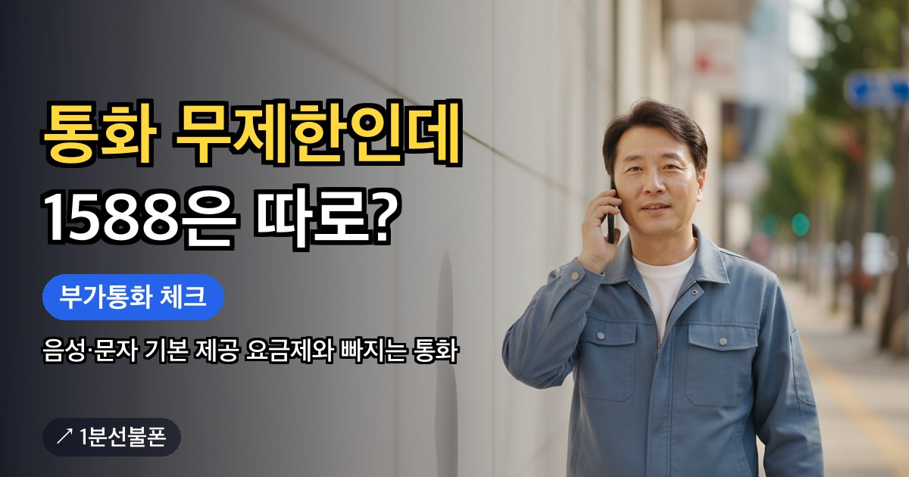
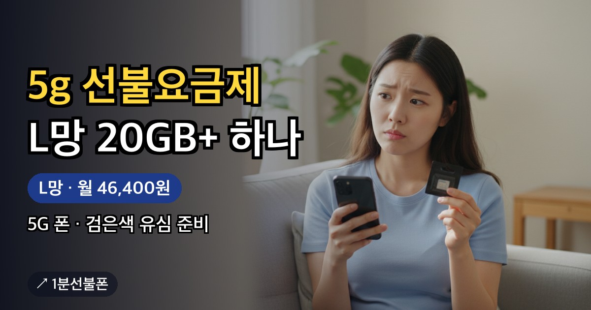

선불폰 개통 비용은 유심값과 첫 달 요금제, 이 두 가지입니다. 편의점 유심이 6,600~8,800원이고 요금제는 12,100원부터라서, 가장 낮게 잡으면 18,700~20,900원부터 시작합니다. 가입비 없음, 약정·위약금 없음이라 여기에 더 얹히는 항목은 없습니다. 아래에서 요금제별로 첫날 합계를 직접 더해 보겠습니다.
- 개통하는 날 나가는 돈은 유심값과 첫 달 요금제 두 가지
- 편의점 유심 6,600~8,800원, 요금제는 12,100원부터
- 가장 낮은 요금제로 더하면 첫날 합계 18,700~20,900원부터
- 가입비 없음, 약정·위약금 없음, 쓰던 휴대폰에 유심만 끼워 개통 가능
- KT망 유심은 CU·GS25·이마트24, LG U+망 유심은 이마트24·B마트·지하철 역 자판기
- 유심이 없으면 신청 페이지에서 택배·퀵 배송, 금액은 신청 화면에서 확인
첫날 계산서에 올라가는 항목은 둘뿐입니다
선불은 요금을 먼저 넣어 두고 쓰는 방식이라, 한 달 뒤 청구서를 기다리는 대신 개통하는 날 돈이 나갑니다. 계산서에 올라가는 항목을 표로 나누면 이렇습니다.
| 항목 | 금액 | 내는 때 |
|---|---|---|
| 유심 | 편의점 기준 6,600~8,800원 | 유심을 살 때 |
| 첫 달 요금제 | 12,100원부터 | 개통한 날 안에 충전 |
| 가입비 | 없음 | — |
| 약정·위약금 | 없음 | — |
요금제 값에는 유심값이 들어 있지 않으니 둘을 따로 더해야 합니다. 요금 충전은 개통한 날을 넘기면 안 되고, 넘기면 이튿날 번호가 정지되거나 해지될 수 있어서 첫 달 요금제 값도 같은 날 준비해 두는 돈으로 잡아야 합니다. 충전 요령은 선불폰 개통 당일 충전 글에 있습니다.
요금제별로 더해 본 첫날 합계
유심값(편의점 6,600~8,800원)에 월 요금을 더한 값입니다. 요금제는 표에 적은 것보다 많으니, 여기서는 가격대별로 몇 가지만 골라 계산했습니다.
| 요금제 | 월 요금 | 유심값을 더한 합계 |
|---|---|---|
| 가장 낮은 요금제(K망 선불 LTE기본1 · L망 선불 기본1) | 12,100원부터 | 18,700~20,900원부터 |
| L망 선불 데이터 2.5GB | 17,000원 | 23,600~25,800원 |
| 선불 396 10.3GB(K망 · L망) | 39,600원 | 46,200~48,400원 |
| L망 5G 선불 20GB+ | 46,400원 | 53,000~55,200원 |
합계에 폭이 있는 까닭은 편의점과 상품에 따라 유심 가격대가 다르기 때문입니다. 표의 합계는 유심값과 월 요금을 단순히 더한 값이며, 개통한 날 실제로 충전하는 금액과 시점은 신청 화면의 안내를 따르세요. L망 5G 선불 20GB+는 5G 폰과 이용 조건이 필요합니다.
어떤 요금제가 내 쓰임새에 맞는지는 선불폰 요금제 추천 글에서, 값이 낮은 쪽만 따로 본 내용은 가장 저렴한 선불폰 글에서 확인할 수 있습니다. 전체 목록은 요금제 비교에 있습니다.
유심값을 두 번 내지 않으려면 — 망에 맞는 유심 고르기
유심은 고른 요금제와 같은 통신망의 것을 사야 합니다. 망이 다른 유심을 사면 다시 사야 해서 유심값이 한 번 더 나갑니다. 계산대에 가기 전에 포장 색과 상품명을 보세요.
- KT망(K망) — 민트색 포장의 바로유심. CU·GS25·이마트24에서 팝니다.
- LG U+망(L망) — 검은색 포장의 모두의원칩. 이마트24·B마트·지하철 역 자판기에서 팔고, CU·GS25에는 없습니다.
- 유심이 없을 때 — 신청 페이지 안에서 택배 배송이나 퀵 배송으로 받을 수 있습니다. 이때 드는 금액은 이 글에 적지 않았으니 신청 화면에서 확인하세요. 받는 순서는 인터넷 유심 신청 글에 있습니다.
예전 통신사에서 쓰던 유심으로는 앤텔레콤 개통을 할 수 없어서, 유심값은 계산에서 빠지지 않는 항목입니다. 편의점 유심은 6,600~8,800원이고 판매처·재고·가격은 바뀔 수 있습니다. 사기 전에 볼 목록은 유심 준비 안내에 있습니다.
계산에 넣지 않아도 되는 돈
개통 비용을 어림할 때 흔히 함께 걱정하는 항목 가운데, 약정 없이 충전해서 쓰는 선불에서는 빼도 되는 것들입니다.
- 가입비 없음 — 가입비를 받지 않습니다.
- 약정·위약금 없음 — 약정을 걸지 않고 충전해서 쓰는 방식이라 해지 위약금이 없습니다.
- 휴대폰 값 — 단말기를 새로 사지 않고 유심만 사서, 쓰던 휴대폰이나 가지고 있는 사용 가능한 휴대폰에 끼워 쓰는 유심 단독 개통이 됩니다.
개통은 신용조회 없이 진행합니다. 가지고 있는 휴대폰에 유심을 끼워 번호를 받는 과정은 공기계 개통 글에 따로 정리돼 있습니다.
돈 쓰기 전에 정할 순서 다섯 단계
순서를 거꾸로 하면 유심을 먼저 사 놓고 요금제를 망에 맞춰 바꾸게 됩니다. 아래 차례로 정하면 첫날 나갈 금액이 미리 나옵니다.
- 요금제 정하기 — 월 요금이 첫날 합계의 큰 부분입니다. 12,100원부터 고를 수 있습니다.
- 망 확인하기 — 고른 요금제가 K망인지 L망인지 봅니다.
- 같은 망의 유심 구하기 — 편의점에서 6,600~8,800원에 사거나, 신청 페이지에서 택배·퀵 배송으로 받습니다.
- 인증 수단 확인하기 — 비대면 개통에는 본인 명의 간편인증서가 필요합니다(웹은 토스·카카오 등, 앱은 네이버·토스·카카오 등). 간편인증서가 없으면 센터 방문으로 개통하며, 실물 신분증을 가져가면 충전까지 도와줍니다.
- 신청하고 그날 충전하기 — 신청 화면에서 요금제를 다시 고르고, 개통한 날 안에 요금을 충전합니다.
유심이 있으면 5분이면 개통까지 끝납니다. 준비물과 신청 순서는 개통 방법 안내에서 볼 수 있습니다.
자주 묻는 질문
선불폰 개통하는 데 다 합쳐서 얼마 들어요?
유심값과 첫 달 요금제 두 가지를 더하면 됩니다. 편의점 유심이 6,600~8,800원, 요금제가 12,100원부터라서 가장 낮게 잡은 합계는 18,700~20,900원부터입니다. 더 큰 요금제를 고르면 그 월 요금만큼 합계가 올라갑니다.
유심값이랑 요금제 말고 가입비도 내야 하나요?
가입비 없음입니다. 약정 없이 충전해서 쓰는 선불 기준으로, 개통하는 날 계산에 넣을 항목은 유심값과 첫 달 요금제 두 가지입니다.
쓰다가 그만두면 위약금이 나오나요?
약정·위약금 없음입니다. 약정을 걸지 않고 충전해서 쓰는 방식이라 해지 위약금이 없습니다.
요금제 값은 개통하고 한 달 뒤에 내도 되나요?
안 됩니다. 선불은 먼저 충전하고 쓰는 방식이고, 개통한 날 안에 요금 충전이 되어 있어야 합니다. 충전하지 않으면 이튿날 번호가 정지되거나 해지될 수 있으니 유심값과 함께 첫 달 요금제 값도 그날 준비하세요.
택배나 퀵으로 받는 유심은 얼마인가요?
이 글에는 편의점 유심 가격(6,600~8,800원)만 적었습니다. 택배·퀵 배송으로 받을 때의 금액은 신청 화면에서 확인하세요. 받는 순서는 인터넷 유심 신청 글에 정리돼 있습니다.
휴대폰 기계도 새로 사야 개통되나요?
새로 사지 않아도 됩니다. 유심만 사서 쓰던 휴대폰이나 가지고 있는 사용 가능한 휴대폰에 끼워 쓰는 유심 단독 개통이 되므로, 휴대폰 값은 개통 비용 계산에서 빼도 됩니다.
같이 보면 좋은 글

통화 무제한 선불폰 — 음성·문자 기본 제공 요금제와 빠지는 통화
전화를 자주 거는 사람이 선불폰을 알아볼 때 가장 먼저 걸리는 건 통화량입니다. 선불폰에도 음성통화와…

선불폰 요금제 추천 — 인증용·일상·5G·대용량, 목적별 고르는 법
선불폰 요금제는 한 줄로 순위를 매기기보다 이 번호로 무엇을 할지부터 정해야 고르기 쉽습니다. 인증 문자만…
가장 저렴한 선불폰, 첫 달 실제 비용은 얼마일까요
선불폰 중 가장 저렴한 조합을 찾는다면 유심비와 요금제를 함께 봐야 합니다. 편의점 유심은…

5g 선불요금제 — L망 5G 선불 20GB+ 하나, 5G 폰과 유심 준비까지
앤텔레콤 선불에서 5G 요금제는 LG U+망(L망)의 「L망 5G 선불 20GB+」 한 가지이고 월…
최종 업데이트: